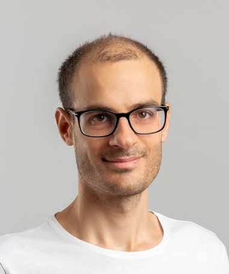
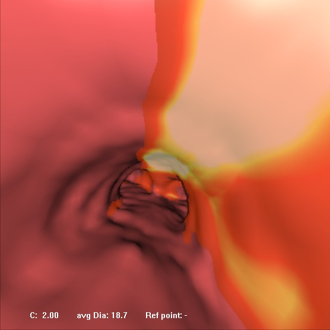

My research interests lie in the areas of medical image analysis and machine learning. The main focus of my research has been on segmentation and classification of imaging data in order to characterize the healthy population and to investigate pathological deviations.
My PhD, obtained from Imperial College London, focused on the automatic segmentation of neonatal brain MRI (2011-2014).
After my PhD, I worked as a scientist at Siemens Molecular Imaging on PET lesion segmentation and 3D rendering for fused PET-CT virtual endoscopy (2014-2015).
I was then a research associate at the BiomedIA group for the developing Human Connectome Project (dHCP). I developed the project pipelines regarding the structural analysis of the neonatal and fetal brain MRI (segmentation, surface reconstruction, spherical mapping).
I also tried the entrepreneurial world as part of the EF9 cohort of the leading tech incubator Entrepreneur First. I worked on different startup directions on product engagement and customer segmentation.
Since then I am employed at ThinkSono. I manage the R&D operations and develop deep learning techniques for DVT detection.
Honors & Awards
- Organising Committee of the MICCAI Workshop on Fetal and InFant Image analysis 2017 (FIFI 2017) and Perinatal, Preterm and Paediatric Image analysis 2016 (PIPPI 2016) and 2018 (PIPPI 2018)
- Program Committee of the MICCAI Workshop on Machine Learning in Medical Imaging 2015 (MLMI 2015), 2016 (MLMI 2016), 2017 (MLMI 2017) and 2018 (MLMI 2018)
- silver medal (top 2.2%) in Kaggle challenge 2016: Ultrasound Nerve Segmentation (link)
- 3rd award in the MICCAI Grand Challenge 2014: Computer-Aided Diagnosis of Dementia based on structural MRI data (CADDementia)
- 1st award in the MICCAI Grand Challenge 2012: Neonatal Brain Segmentation (NeoBrainS12)
Patents
Projects
Deep Vein Thrombosis (DVT) detection
Managing the R&D operations and development deep learning techniques for detection of deep vein thrombosis (DVT).Structural analysis of the perinatal brain
Development of the pipelines for the structural analysis of the neonatal and fetal brain for the developing Human Connectome Project (dHCP) project. Implementation of a system for the analysis of T1/T2 MRI encompassing segmentation of the brain, white and gray matter surface extraction, surface inflation and projection to the sphere, as well as quality control (QC) for the system.Press: Our project on the Guardian (link) and BBC (link)
Software: dHCP Structural Pipeline
Publication: The Developing Human Connectome Project: a Minimal Processing Pipeline for Neonatal Cortical Surface Reconstruction (link)
Ultrasound nerve segmentation
Segmentation of nerve structures in Ultrasound images of the neck using deep learning. Participation in the Ultrasound nerve segmentation Kaggle challenge. Ranked top 2.2%.
PET lesion segmentation
Development of PET segmentation techniques that take into account the background uptake information to improve the delineation accuracy.Patent: Automatic background region selection for lesion delineation in medical images (link)

Virtual bronchoscopy
Extension of a combined PET-CT virtual bronchoscopy application. The developed prototype allows a 3D rendering of the airways in conjuction with PET uptake of lesions within biopsy distance.Regional development of the neonatal brain
Application of the regional parcellation to characterize the normal development of the neonatal brain and to quantify the effect of prematurity. Structural volumes and surface measures were measured regionally to investigate the normal growth pattern, as well as deviations in the preterm brain. Using the data from this study, I constructed a spatio-temporal structural atlas with 87 structures of the developing neonatal brain.Publication: Regional growth and atlasing of the developing human brain, NeuroImage, 2016 (link)
Neonatal brain MRI segmentation
Development of the first automatic segmentation method for regional parcellation of the neonatal brain into 87 detailed structures. The method has been released as open-source software, Draw-EM (Developing brain Region Annotation With Expectation-Maximization). It is being used as part of the structural pipeline of the developing Human Connectome Project (dHCP) and image analysis in King's College London and Imperial College London.Prior to regional parcellation, I developed a similar algorithm for tissue segmentation of the neonatal brain. The algorithm was awarded with the first prize in segmentation accuracy in the MICCAI NeoBrainS12 challenge.
Software: Draw-EM
Publications:
Automatic whole brain MRI segmentation of the developing neonatal brain, IEEE TMI, 2014 (link)
Automatic tissue and structural segmentation of neonatal brain MRI using Expectation- Maximization, MICCAI Grand Challenge on Neonatal Brain Segmentation 2012 (NeoBrainS12) (link)
Thesis: Automatic MRI segmentation of the developing neonatal brain, 2014 (link)
dHCP Structural Pipeline
The dHCP Structural Pipeline is an open-source software / pipeline for the structural analysis of perinatal brain MRI. The structural pipeline includes segmentation of the brain, white and gray matter surface extraction, surface inflation and projection to the sphere.Publication: The Developing Human Connectome Project: a Minimal Processing Pipeline for Neonatal Cortical Surface Reconstruction (link)
Draw-EM segmentation software
Draw-EM (Developing brain Region Annotation With Expectation-Maximization) is an open-source software for the regional parcellation of the neonatal brain into 87 detailed structures. The software is being used as part of the structural pipeline of the developing Human Connectome Project (dHCP) and image analysis in King's College London and Imperial College London.Publication: Automatic whole brain MRI segmentation of the developing neonatal brain, IEEE TMI, 2014 (link)
Neonatal structural atlas
A detailed spatio-temporal structural atlas for the neonatal brain with 87 labelled structures. The atlas was constructed using automatic segmentations of 420 brain MR images. The structural atlas defines the structure probability and average segmentation of each structure.Publication: Regional growth and atlasing of the developing human brain, NeuroImage, 2016 (link)